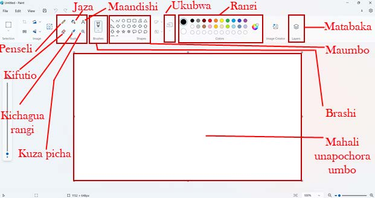
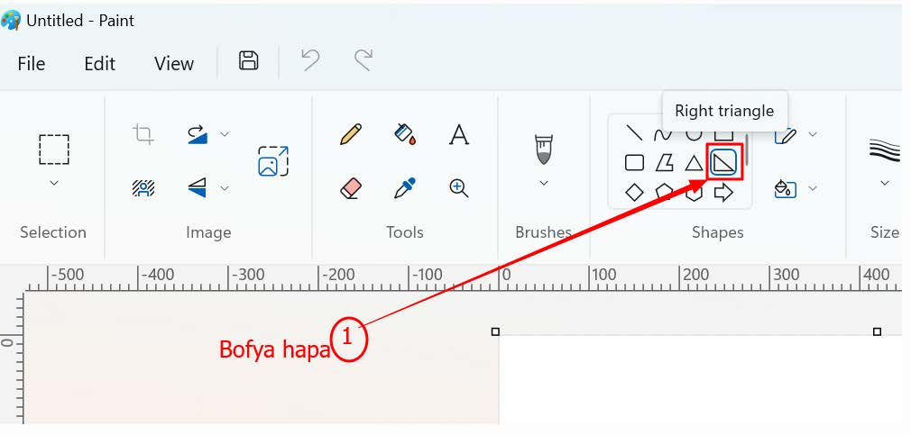

Programu ya ‘Paint’ itafunguka.Kielelezo namba 4 kinaonesha sehemu za programu ya Paint.

Kielelezo namba 4: Vipengele vya programu ya paint
Uchoraji wa maumbo
Kazi ya kufanya namba 3: Kuchora maduara yakiwa kwenye mteremko
Hatua
1.Bofya kwenye zana ya pembetatu mraba ‘Right angled triangle’ kama inavyooneshwa katika Kielelezo namba 5.

Kielelezo namba 5: Kuchagua zana ya pembetatu mraba